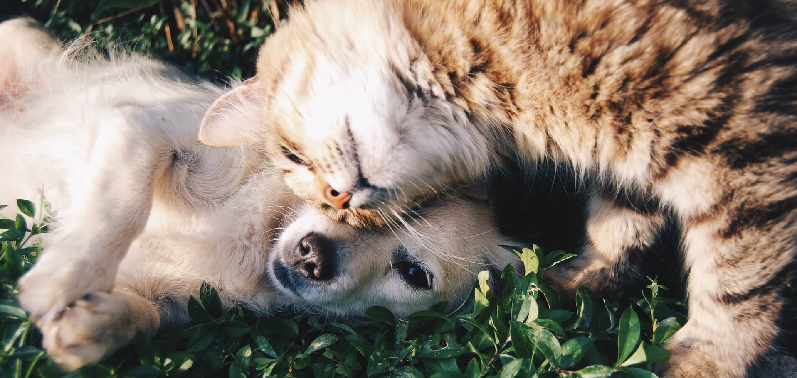

Postat in Septembrie 28, 2017 la 10:00 AM
La cabinetul veterinar Pet Love Vet avem grija ca animalele dumneavoastra de companie sa fie ingrijite asa cum se cuvine. De aceea, medicii nostri veterinari va vin in ajutor cu serviciul de castrare al cainilor. Cu toate ca aceasta interventie chirurgicala este privita cu suspiciune de multi stapani de animale, ea este absolut necesara.
Castrarea unui caine se poate face oricand, insa este indicat ca animalul sa ajunga la maturitate, intrucat organismul acestuia trebuie sa fie complet dezvoltat. De altfel, sterilizarea cainilor femele se face inainte ca acestea sa intre in primul ciclu de calduri, iar la cainii masculi castrarea se face inainte de manifestarea lor sexuala. In orice caz, este necesar sfatul medicului veterinar pentru a se stabili momentul propice pentru operatie.
Care sunt avantajele interventiei?
Unele avantaje privesc direct cainele femela, altele cainele mascul, insa putem discuta si despre cateva aspecte comune.
In ceea ce priveste avantajele sterilizarii cateluselor putem enumera:
La masculi este necesara castrarea pentru ca:
Aceasta interventie nu este deloc dureroasa pentru cainele dumneavoastra, intrucat totul se va desfasura sub anestezie. Mai mult decat atat, il puteti lua acasa chiar in aceeasi zi si va avea un comportament destul de vioi dupa castrare, putand reveni la activitatile obisnuite de a doua zi.
Castrarea motanilor si, implicit sterilizarea pisicilor reprezinta cele mai populare proceduri cand vine vorba de vizitele care se fac in cabinetele veterinare. Pentru necunoscatori, castrarea unui motan presupune o interventie chirurgicala simpla care necesita ingrijiri de cateva zile intrucat glandele sexuale sunt pozitionate in exterior. In ceea ce priveste operatia de sterilizare a pisicii, aceasta este o procedura cu mult mai complexa deoarece ovarele sunt pozitionate in interiorul corpului, iar recuperarea postoperatorie presupune atentie sporita. Retineti, totusi, faptul ca aceste doua interventii se realizeaza cand animalutul se afla la maturitate si procesul de crestere s-a incheiat.
Nu toata lumea intelege importanta acestora si, mai ales, de ce sunt indicate astfel de proceduri in cazul animalutelor de companie. Este gresit sa credeti ca sterilizarea reprezinta un moft, cand de fapt este o necesitate.
Iata de ce este indicat sa apelati la aceste interventii:
Dupa castrare/sterilizare exista riscul ca animalul dumneavoastra sa ia in greutate, insa puteti tine acest lucru sub control, oferindu-i o cantitate echilibrata de mancare. De asemenea, daca medicul veterinar va recomanda o dieta, ar fi bine sa o urmati, pentru a elimina riscul aparitiei unor boli la inima.
Pentru a va oferi si mai multe informatii despre castrarea/sterilizarea cainilor va asteptam la cabinetul veterinar Pet Love Vet!
Echipa cabinetului veterinar Pet Love Vet va sta la dispozitie